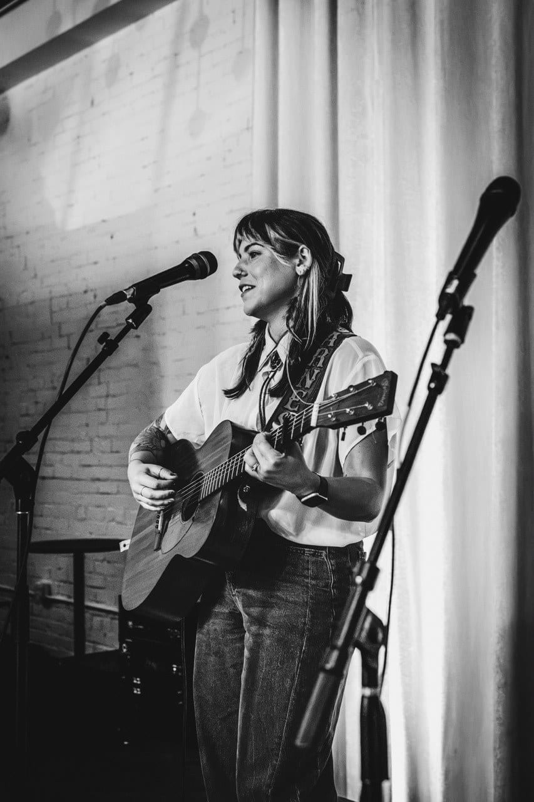
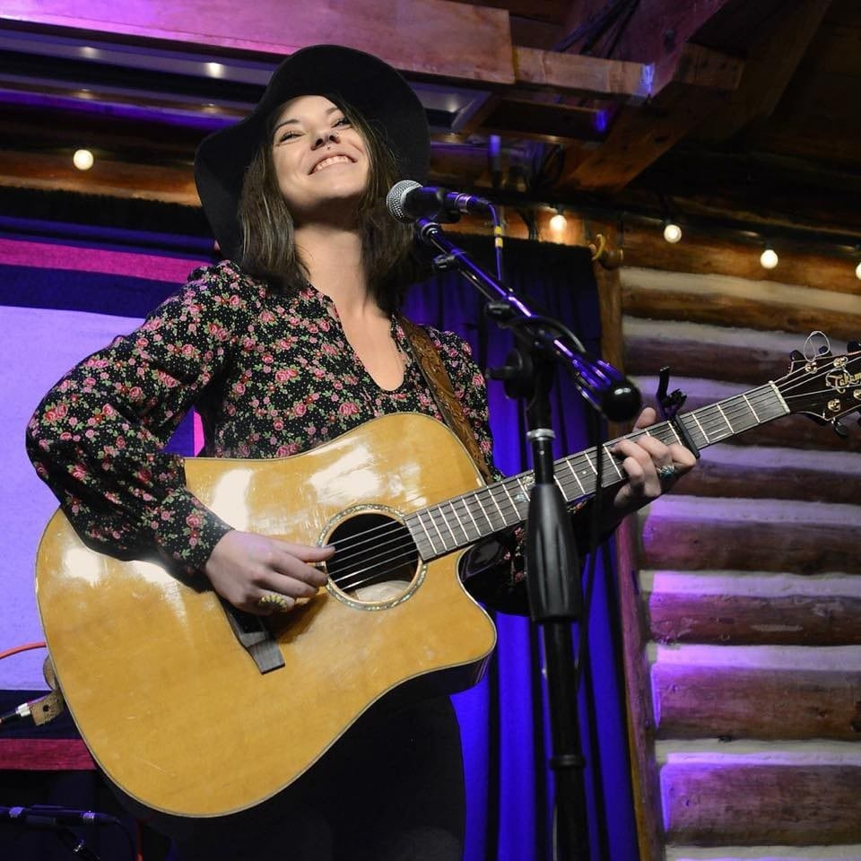
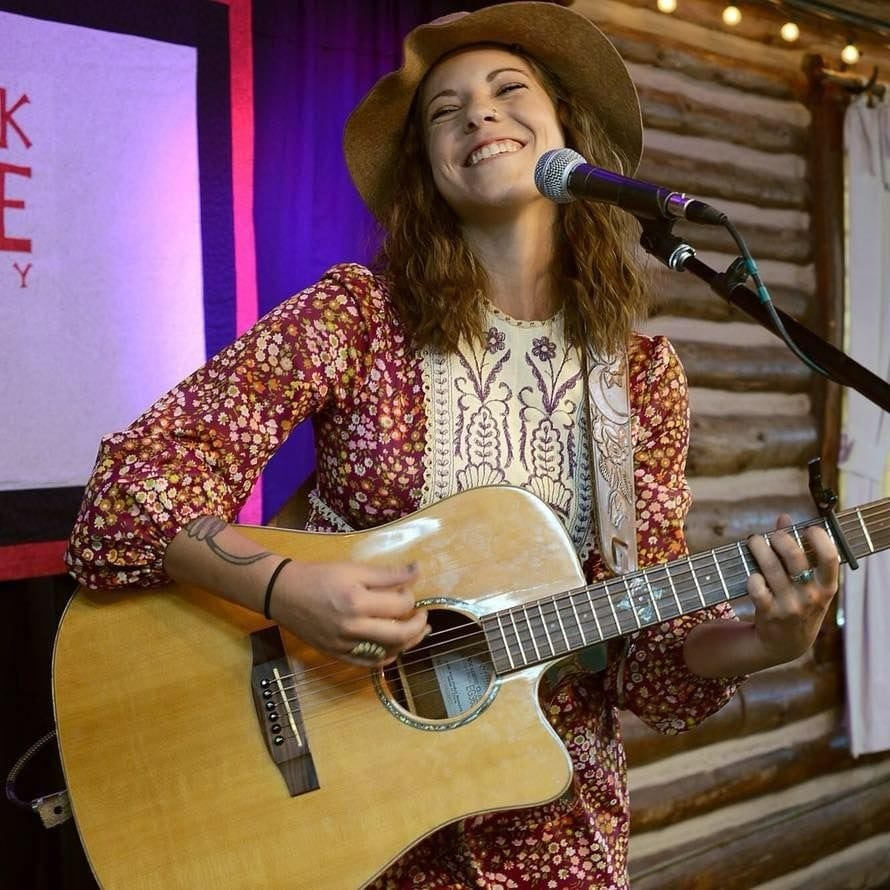
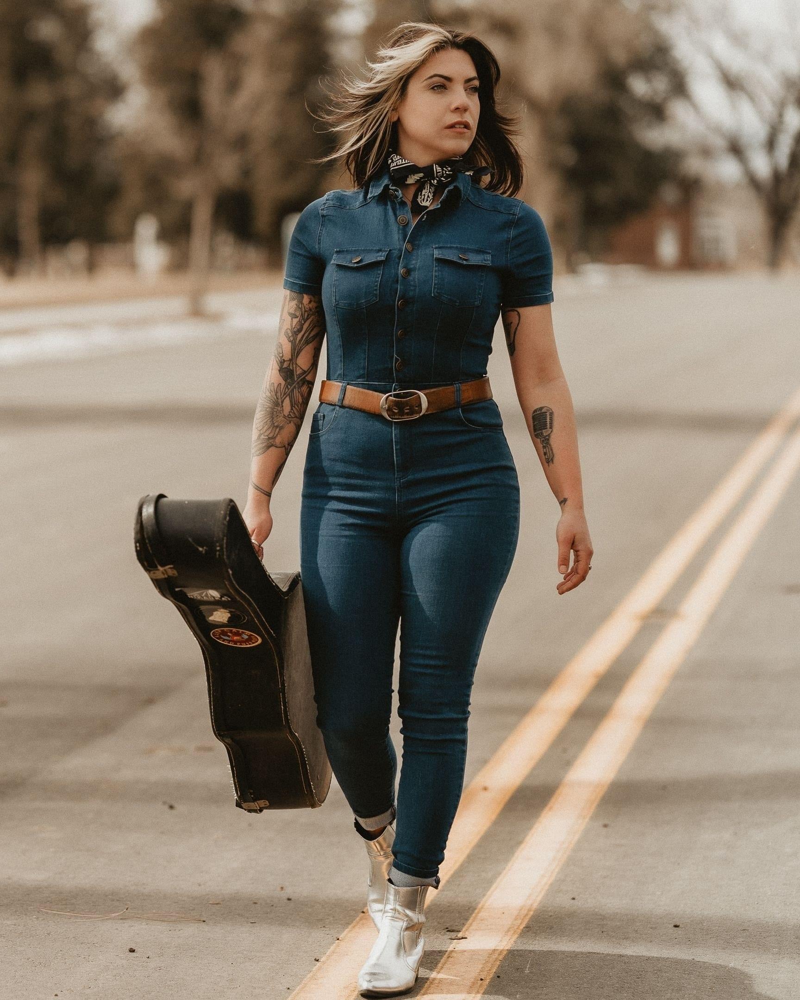
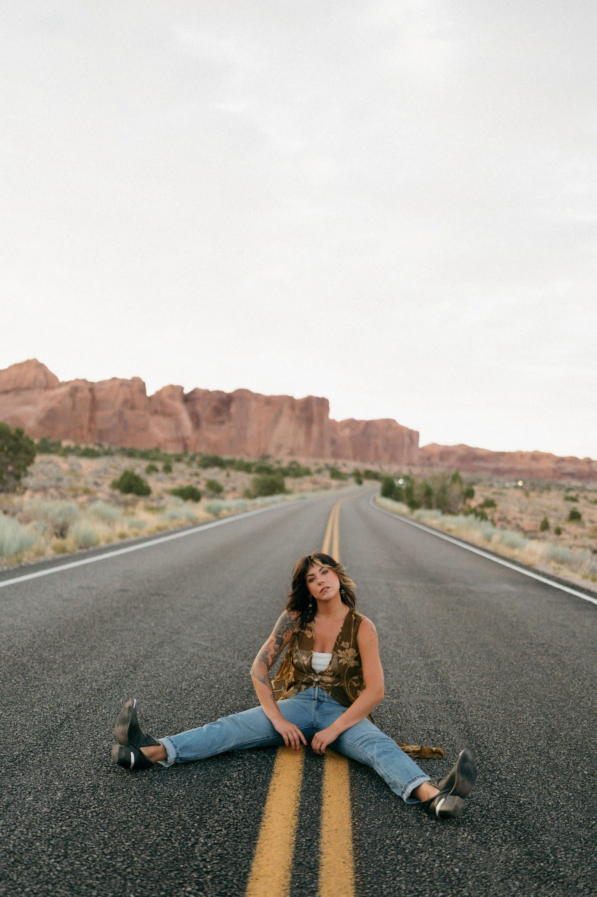
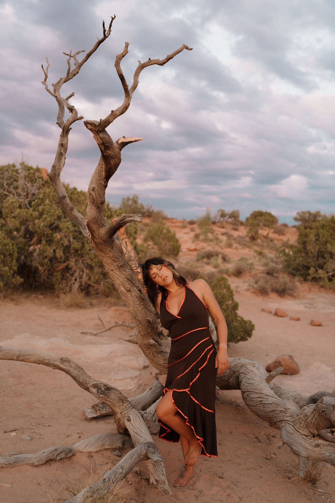

Folk singer-songwriter
Emily Barnes
- WinnerFirst place, Hey Nonny Songwriting ContestHey Nonny, Arlington Heights, Illinois, 2025
- WinnerSongwriting contest winnerColorado Music Business Organization, 2026
- FinalistNew FolkKerrville Folk Festival, 2017
Covers and originals, solo, as a duo or as a trio.
Some singers fill the background, and some make everyone go quiet and lean in. Emily Barnes is the second kind. She’s an award-winning folk singer-songwriter who plays Joni Mitchell, Fleetwood Mac and Dolly Parton alongside her own songs, and she can play on her own for a ceremony or a dinner, or bring guitar, fiddle and harmonies as a duo or a trio.
Awards and press
- WinnerFirst place, Hey Nonny Songwriting ContestHey Nonny, Arlington Heights, Illinois, 2025
- WinnerSongwriting contest winnerColorado Music Business Organization, 2026
- FinalistNew FolkKerrville Folk Festival, 2017
- FinalistSongwriting competitionRed Lodge Songwriting Festival
- FinalistSinger-Songwriter CompetitionThe Acorn
- FinalistSongwriting contestBlast on the Bay
In the press
- Divide and Conquer
Press · 2017
“Emily Barnes is more than just a musician; she's a storyteller that sets the lives of her characters to music.”
- Up to Hear Music
Press
“One cannot help but imagine the song playing as the opening credits roll across some Rocky Mountain film that has yet to be made.”
- Just Music Thoughts
Press
“A dedicated singer-songwriter, with a beautiful voice, and an ability to take command of a room.”
Live review
- Music for Lunch
Press · 2017
Stages and records
- TrueSongs at Caffe Lena in Saratoga Springs, New York, writing and performing a song from a listener's story (2025)
- The Black Rose Acoustic Society in Black Forest, and songwriter nights from Denver and Boulder to Fort Collins and Grand Junction
- A sold-out tour of the Northeast for her album Mint Condition
- Four albums, including Let in the Light and Mint Condition, and the singles Warren County and Comets
Trusted and booked by
Emily won the 2025 Hey Nonny Songwriting Contest, and in 2026 the Colorado Music Business Organization named her one of the ten winners of its songwriting contest. She’s been a finalist at the Kerrville Folk Festival’s New Folk competition, the Red Lodge Songwriting Festival and The Acorn Songwriting Contest, too. Critics have compared her to Brandi Carlile and Joan Baez.
She grew up in Johnsonburg, New Jersey, a town of under a hundred people, writing songs on the stone steps of her family’s 200-year-old house. She’s made four albums since, and her album Mint Condition took her on a sold-out tour of the Northeast. These days she plays all over Colorado, from Denver and Boulder to Fort Collins and Grand Junction.
Last year she played 165 shows of her own music and 45 private events, so she knows how to hold a listening crowd and how to keep a cocktail hour easy and warm. She brings her own sound system, and she’s happy to plan the night around the songs you love.
Configurations
| Size | What it suits |
|---|---|
| SoloVoice and acoustic guitar | On her own, she’s a lovely fit for a ceremony, welcome drinks or a dinner where you want something a little more special than background music. |
| DuoEmily with Chris Koza on guitar and harmony vocals, or with Anthony Manoguerra on fiddle and harmony vocals | Two voices in harmony are hard to beat for a cocktail hour or a patio party, and the fiddle gives the duo a little country and Americana flavor. |
| TrioEmily with both Chris Koza and Anthony Manoguerra: voice and guitar, a second guitar, fiddle and three-part harmony | Book the trio for a fuller sound at a reception, a retreat evening or a holiday party, without drums. |
Send us your date and we’ll help you choose the size that works best. She can change up the players to fit the style or theme of your event, too.
Occasions
Perfect booking for
- Mountain and garden weddings
- Book her solo for your ceremony, then bring in the duo or the trio for your cocktail hour and dinner. Landslide and You’ve Got a Friend are hard to beat for a first dance.
- Dinner parties and celebrations
- She’s a great fit for a birthday, an anniversary or a dinner at home, when you want music people actually stop and listen to.
- Retreats and client dinners
- A Colorado songwriter telling the stories behind her songs makes a warm evening for a team or for clients after a long day of meetings.
- Holiday parties
- The trio’s guitar, fiddle and harmonies give a party a full sound without drums, so your guests can still talk.
Planning toasts or a program? We can work the music around them with your run of show. You can also get a general idea of what live music costs in Colorado from our cost guide.
Song list
A sample of her songs.
This is a sample of the covers on her song list, and we’ll put the setlist together with you.


- Both Sides NowJoni Mitchell
- LandslideFleetwood Mac
- DreamsFleetwood Mac
- Don't Know WhyNorah Jones
- Angel from MontgomeryJohn Prine
- In Spite of OurselvesJohn Prine
- Coat of Many ColorsDolly Parton
- 9 to 5Dolly Parton
- Annie's SongJohn Denver
- You've Got a FriendCarole King
- The StoryBrandi Carlile
- Diamonds & RustJoan Baez
- Our HouseCrosby, Stills, Nash & Young
- Have You Ever Seen the RainCreedence Clearwater Revival
- Running on EmptyJackson Browne
- Wide Open SpacesThe Chicks
- If It Makes You HappySheryl Crow
- Hand in My PocketAlanis Morissette
- You Were Meant for MeJewel
- Kiss MeSixpence None the Richer
- Drops of JupiterTrain
- YellowColdplay
- What's Up?4 Non Blondes
Video Clips
Watch Emily Barnes play










What clients say
“Their poignant lyrics, captivating voices, and iridescent stage presence made a lasting impression. We look forward to their return...”
Emily Barnes questions
Still have a question? Our full question list may have the answer.
Does she play covers or her own songs?
Can she keep the volume down during dinner?
Does she bring her own sound?
Does she play in the mountains?
Looking for a folk singer for your event?
Send us your date and we’ll let you know if Emily is available and what it would cost.
Want photos or video of your event? Add them to your booking.